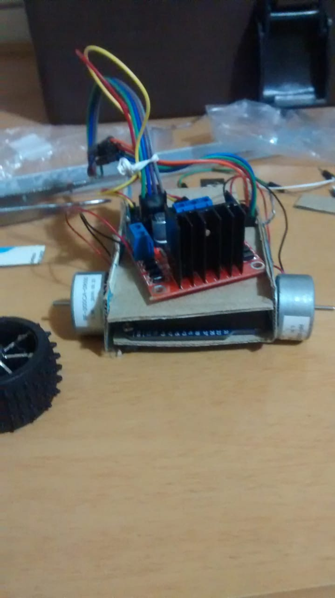
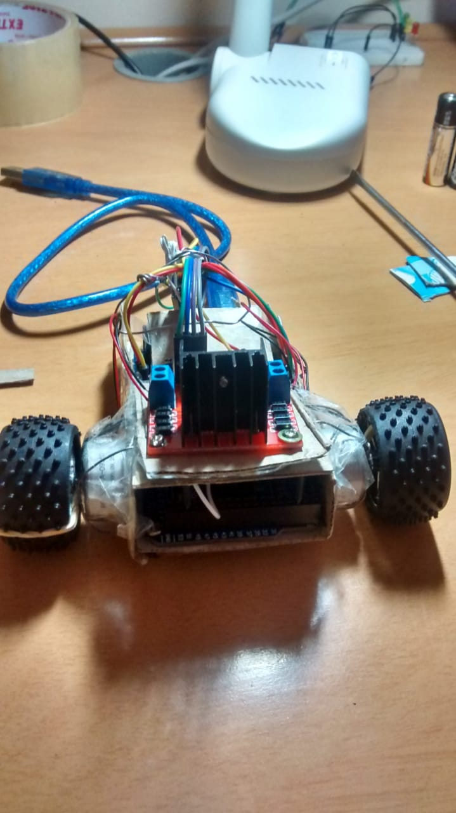
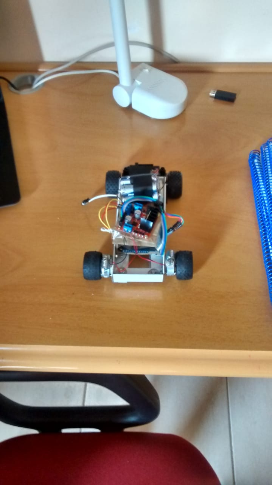
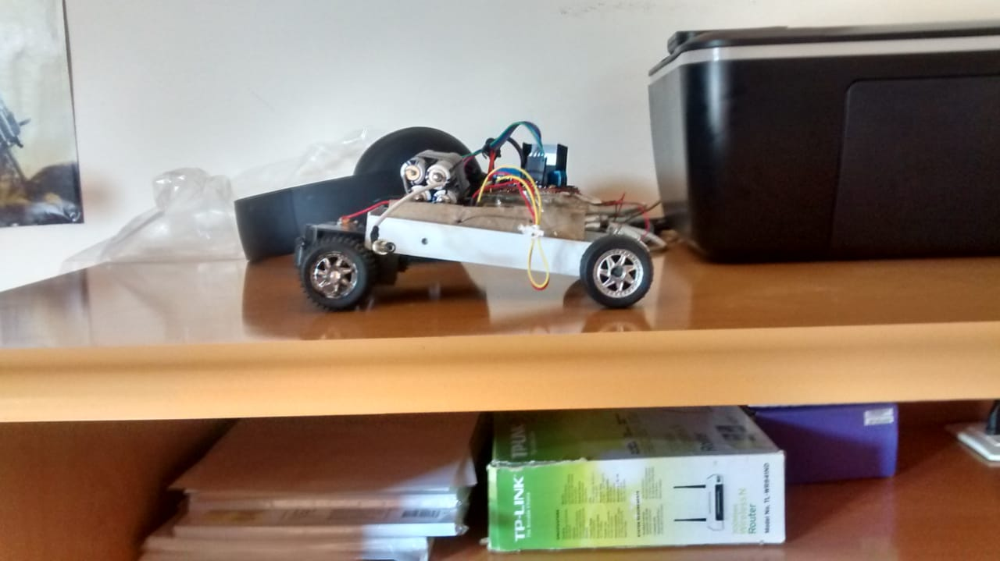

- Home
- >
- Portfolio
- >
- Projeto R2
Projeto R2
Esse foi um projeto que desenvolvi por volta do ano de 2015. Era um grande sonho da minha infância desenvolver meu próprio robô, e esse foi o primeiro e único que eu fiz. Seu nome é R2 em homenagem ao R2D2 da série de filmes Star Wars. Em breve outras versões, melhores e mais complexas, serão feitas.
 

Voltar ao Portfólio
Voltar ao início